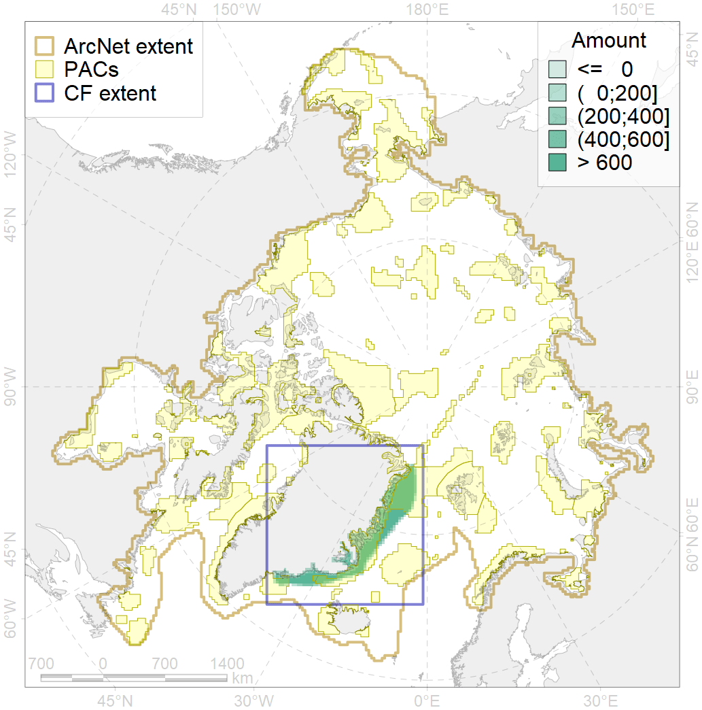
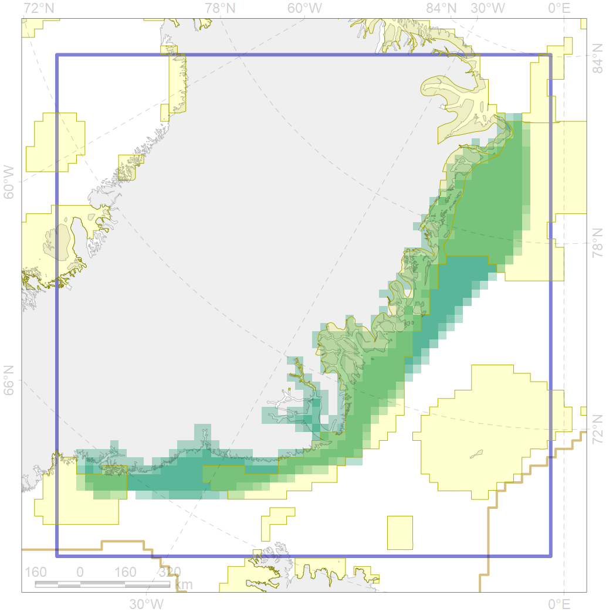

1004

| CF ID | 1004 |
| CF Name | Atlantic Walrus Summer Distribution in East Greenland |
| Time Period | till 2016 |
| Source(s) | ftp://ftp.oar.noaa.gov/arctic/documents/ArcticReportCard_full_report2015.pdf https://nammco.no/topics/atlantic-walrus/#1478699758629-7da126c3-48a6 |
| Seasonality | May-September |
| Depth Horizon | 0-200m |
| Methodology | Compilation of all available reports. |
| Author Name | Maria Solovyeva |
| Notes | |
| Conservation Target Set in the Scenario | 0.336 |
| Conservation Target Achieved in the Scenario | 0.685 (Scenario: 203.9%) |
| PAC ID | Proportion in the PAC | Contribution to ArcNet Target Achievement | PAC’s Contribution to the Achieved Target |
|---|---|---|---|
| 29 | 26.8% | 78.9% | 38.7% |
| 32 | 38.0% | 106.1% | 52.0% |
| 33 | 0.9% | 2.7% | 1.3% |
| 42 | 3.1% | 7.5% | 3.7% |
| inner | 68.9% | 195.3% | 95.8% |
| outer | 31.1% | 8.7% | 4.2% |